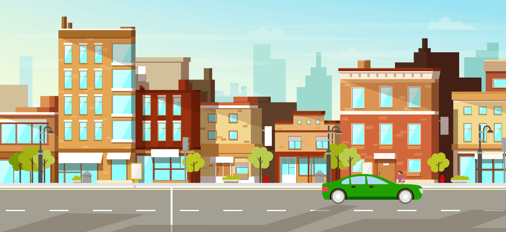
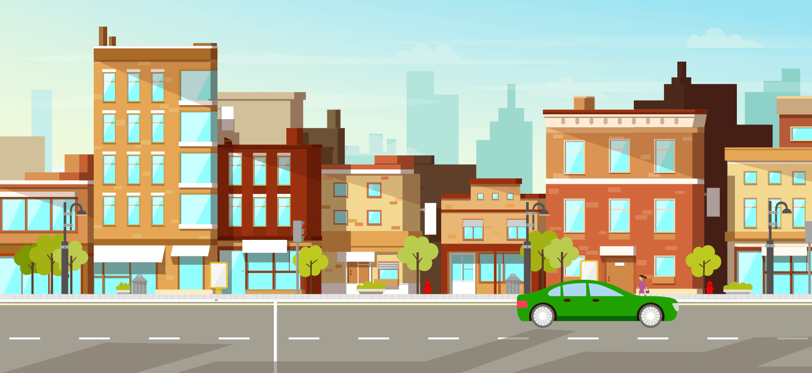

Asap kendaraan lain, debu, lalu polusi yang kamu temui dalam perjalanan ke kantor bisa terkena mata dan membuatnya merah.
Bila itu terjadi...

Buka Insto
Buka Insto
Ruang kantor yang ber-AC, menatap layar komputer selama beberapa jam bisa membuat matamu lelah dan kering sehingga menganggu konsentrasimu saat bekerja
Buka Insto
Taeke a break!
Istirahatkan matamu sejenak
dan tetes Insto Dry Ayes untuk
melembabkan kembali
mata yang kering.
Buka Insto